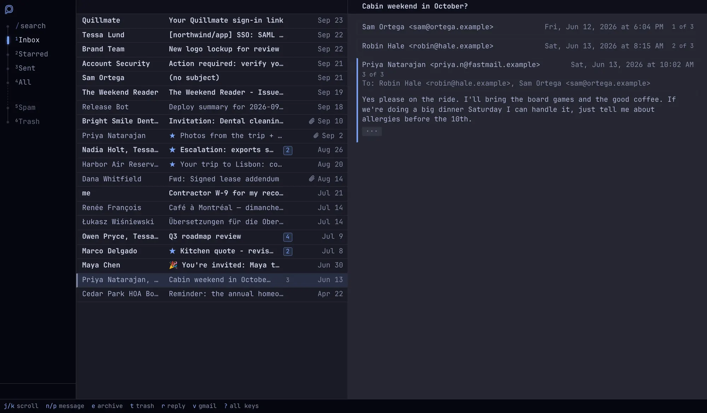

From 1866 to 1984, letters crossed Paris through tubes under the streets, by compressed air, and arrived within the hour. Parisians called the letter itself un pneu.
Gmail designed for Omarchy
Beautifully themed and driven entirely from the keyboard.

Install pneu by following INSTALL.md at github.com/jmckible/pneu
Paste it into your agent (Super + `)
Keyboard first.
Move like vim, j and k, or with the arrows. Every action is a single key, and the key bar shows them until you know them.
Or use a mouse, if you prefer.
Gmail is still the server.
lieer syncs your mail through the Gmail API, and notmuch keeps a local, searchable index of all of it. Turn on push and new mail arrives in seconds. You sign in with your own Google application, so nothing is shared between pneu users, or with me. And one pneu server can serve every machine you own from the same archive.
Ready? Hand it to your agent.
Install pneu by following INSTALL.md at github.com/jmckible/pneu
Let your agent guide you through the set up process. Once configured, customization is a prompt away